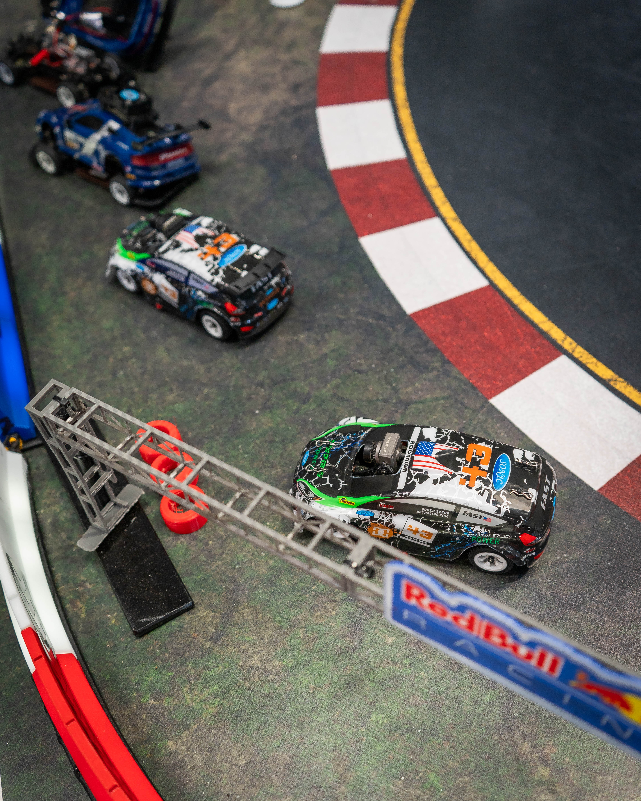

● QUÉ ES
Cuatro pasos. Cero curva de aprendizaje.
La misma secuencia que ya funciona en la operación real del cliente.
Elige
Selecciona tu coche y tu circuito.
Siéntate
Cockpit con volante, pedales y pantalla FPV.
Conduce
Cámara en primera persona, sensación real de pilotaje.
Compite
Tiempos de vuelta y posición medidos en directo.
● LA PRUEBA
No es una promesa. Ya está rodando.
Sesión real, con telemetría en pantalla — no es un concepto.

● PARA EL OPERADOR
Una atracción difícil de confundir con otra.
Diferenciación
Ninguna otra atracción combina coche real, cámara FPV y cockpit físico en un mismo circuito.
Escalabilidad
El sistema se adapta al espacio disponible, desde una instalación compacta hasta el circuito completo.
Rotación
Sesiones y competiciones programables — el flujo de clientes no depende de horarios fijos.
Contenido
Cada sesión genera material visual y conversación — la telemetría y el cronómetro son parte del espectáculo.
● LAS ESCALAS
¿Cabe en tu espacio?
Operación ágil
- Menos puestos de pilotaje
- Circuito reducido
- Rotación rápida de clientes
Hasta seis simuladores
- Circuito compartido completo
- Competición con posición en vivo
- Capacidad máxima de la atracción
Medidas reales de espacio (m²) pendientes de confirmar con el cliente — ver TASKS.md. No se completan aquí con suposición.
● CÓMO TRABAJAR CON NOSOTROS
Tres formas de entrar en pista.
Instalación fija
El operador incorpora la atracción de forma permanente en su centro de ocio.
Solicitar informaciónEvento temporal
Contratación para ferias, activaciones de marca o eventos puntuales.
Consultar disponibilidadFormato competición
Liga o ranking entre pilotos — refuerza la propuesta, no es la puerta de entrada.
Saber más● PÚBLICO — PENDIENTE
Falta confirmar con el cliente: ubicación de la unidad abierta al público, si ya opera de forma regular, y cómo se reserva. Ver ESTRUTURA-DO-SITE.md bloco 7 — no se rellena con suposición.
● CONTACTO — PENDIENTE
Falta: teléfono, email o WhatsApp comercial, y si el cliente prefiere formulario o contacto directo. Ver ESTRUTURA-DO-SITE.md bloco 8.